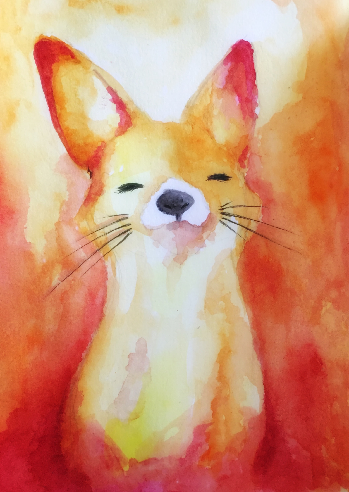

아리는 리그 오브 레전드 세계관에서 유일한 한국형 캐릭터이다.
Ahri is the only Korean character in the League of Legends worldview.
아리의 딜은 다른 암살자 챔피언에 비해서는 약한 편이다
또한 물리 지수가 없어 스킬을 다 소비하고 나면 쿨이 돌때까지 평타로만 교전해야 하는 하이리스크 하이 리턴 형식을 가지고 있다.
암살의 성공여부가 매혹이 맞냐 안 맞냐로 좌지우지되기 때문에 매혹 의존도가 높은 편이다
(라인전 싸움중 매혹을 미니언에게 날렸을시,게임을 잠시 끄고 유튜브를 보고 오는것도 하나의 방법이다.)
매혹이 맞을 경우 5초간 표식이 남아 있는 기간 동안 아리의 모든 공격은 +20%가 된다
또한 q스킬의 2타는 고정피해를 입힌다.
(냥)
아리는 딜이 부족하다는 단점이 있지만 미인계로 그 단점을 커버한다.(예 뭐래니)
아리의 가장 큰 장점은 매혹이다. 그리고 아리의 매혹은 다른 매혹과는 차원이 다른 능력을 보여준다.
매혹은 챔피언의 매력 정도에 따라 지속시간이 달리는데 아리는 무려 2초 동안 매혹을 건다(물론 아리의 매혹은 챔피언 말고도 미니언, 정글몹등도 맞는다.)
다른 매혹을 가지고 있는 챔피언들과 비교를 해보았다.(만렙기준)
이블린 2초
라칸 1.5
핑핑이 1.75
아리 2초
이렇게 보았을 때 아리의 매력에 견줄 수 있는 캐릭터는 오직 이블린 밖엔 없다.
하지만 지속시간이 같다고 해도 완전히 매력이 같은 것은 아니다.
이블린은 하트가 다 차야 매혹에 걸리고 이는 오랜시간 매력을 발산해야 넘어온다는 뜻이다 반면 아리는 맞추자 마자 매혹에 걸린다. 유혹하자마자 넘어온다는 뜻이다.
우리는 여기서 아리의 매력을 짐작할 수 있다.
물론 라칸과 핑핑이는 다중 매혹이라는 장점이 있다.
(밑에는 정신건강에 좋지 않습니다 읽지 마세요^^)
하지만 라칸은 못생겼고 핑핑이는 버스 뒷문으로타서 앞문으로 내리는 마그마 속에서 곱게 익을 동네합바리 42.195 cm 달려놓고 마라톤했다고 생각하는 레몬보다 상큼하고 딸기보다 달콤하고 아름다운섹히 인천국제공항옆부두횟집에 신선하게 팔려갈 총살판개머리판은왜개의머리로만들었죠하고군인들한테 묻다가 능지처참당할 전봇대 뽑아다가 양싸이드 눈깔에 확 쳐넣고 증조할아버지 소주에 코코아 타먹을 유글레나 말라리아 보다 못한 생물학적으로 돌이킬 수 없는 뇌의 구조를 가진 자선냄비에 라면 넣어보는 열성유전자의 합집합 리모컨을 바꿨더니 TV화질이 좋아졌다고 학교가서 자랑하다 아가리 한대 더 맞을 질병의 상징 엄마가 웃으면서 자살을 추천하는 불우한 아메바 정신연령을 가진 사시미 찔려서 나온 피에 적혈구 세고있는 보기만 해도 안타까움에 내 눈물샘이 자극되는 제기랄의 협곡인 처절한 경제불황의 근본기초의 발판이 되 준 인류가 진화하는 과정에서 다른길로 접어들어버린 철인 28호 수능 영어듣기평가시간에 괜히 자신의 존재성을 알리려고 기침한번 했다가 그자리에서 다굴맞고 대가리속 순두부 흘리며 뒤지기 일보직전 선생들이 이새끼는 원래 쓰레기라며 이참에 당장 소각장에 불태워서 흔적조차 없에자고 합의 보고 태워버릴 게넘프로젝트 표본 신라면에 올챙이 넣어서 끓여먹는 너무나도 추상적인 정신병원 수석환자 하루살이 전등에 붙어 있는 해바라기 씨앗 밖에 안되는 전기톱으로 대가리 갈아도 안갈릴 무쇠철통 전설의 핵대가리 미취학아동같은 다리부터 골통까지 대패로 가죽을 깎아낼 아스팔트 바닥에 피어난 잡초보고 공산주의를 떠올리는 혁신적인 태어날때부터 저주받은 생물학적으로 도저히 손댈 수 없는 벌집 앞에서 온몸에 꿀쳐바를 물고기와 대화가 통하는 생체학적으로 문제가 있는 삽대가리 대한민국 국민총생산 수치를 떨어트리는데 기여하는 사회의 암적인 도시빈민굴의 전형적인 대표 시베리아 한복판에 떨어져도 눈 퍼먹으며 잘 살아갈 곱등이보다 더 한 민대가리 오발탄 노약자석에 김일성 주체사상을 적용시켜버리는 엄마생일때 초대받지 못한 롯데월드 혜성특급 타다 대가리에 피쏠려 팽창한후 주변 사물에 시속 120Km로 대가리 박고 의자에서 빙글빙글 돌다가 너를 거부하는 안전벨트가 스스로 풀려서 급강하하는 혜성특급에서 그만 이탈해서 날라가다가 태백산자락에 떨어져서 동물들한테 따당할 무식이 토성까지 다다르는 핵폭탄 맞은 50살먹은 이웃집 강아지 빙고만도 못한 모든 계단손잡이에 침뱉어놓는 노예시장에서 몸값 1원에 낙찰된 인천 앞바다에서 일본 욕하는 오락실에서 10원짜리 10개 넣고 오락하다 첫 판에 바로 죽을 과학적으로 제일 빠지지 않게 만들었다는 동그란 맨홀뚜껑에서 기하학적인 법칙을 적용해서 순식간에 빠져버리는 만민의 눈물샘을 자극하는 인생자체가 인간극장 다큐멘타리에 나오는 불우한 이야기들의 표본이 되는 63빌딩에서 떨어지면 곧바로 죽는다는 소리를 듣고 63빌딩 1층에서 뛰어내려 자살하려고 애쓰면서 다음 생애에는 어떻게 죽을까 고민하는 날아가다 유상철 홈런볼에 맞은 비둘기보다 못한 온갖 불치병의 베타테스터라는 영예로운 삽질을 하는 테레사수녀가 빨리 뒈지라고 기도하는 무가치적 프로야구장편소설쓰다가 야구공에 얻어맞고 때려치는 나약한 의지의 합집합 초저녁부터 술빨았나 17대 국회의원같은 호로 아가리에 염산 쳐물고 태평양에 잠수한다 실시에 에이스 침대 광고보고 슈퍼마켓에서 에이스 과자 한봉지 사서 베고자는 놀고 먹는 10원줘도 대주는 인터넷에서 동영상만 나올려하면 딸치려고 준비하는 롯데월드 드림랜드 자유이용권 끊으려고 1시간 대기하다 들어가자마자 회전목마에서 크게 부상입고 다음날 뉴스 사고 부상자 명단에 실릴 제기랄의 협곡 얼굴이 빛까지 흡수하는 암울한 생태계의 낙오자 롤킥 한 100대 쳐맞고 뻗어서 병동에 실려가면 의사가 니 면상보고 치료를 거부할 환상의 유전자 조합아 마징가제트가 세계수군단에게 잡혀서 그만 내장프로그램을 개조당하고 지구를 파괴하라는 명령을 받고 출동했는데 대기권 초고속으로 돌파하다가 니면상보고 그상태에서 모든 과학적법칙의 적용을 개무시한채 진로바꾸고 열권까지 거침없이 진행한 열성유전자의 합집합이다.
그렇기에 아리가 더 좋다(예 그렇다고 하네요 뭐...)
필자도 아리 전문가는 아니기 때문에 운영의 기본만을 서술한다
아리는 미니언 처치 속도가 매우 빠르다
따라서 라인 푸쉬에 용이하다는 것이다. 이것은 로밍을 갈 때에 큰 이점으로 작용한다.
게임이 후반으로 흘러가면 합류가 중요해진다. 미리 라인을 밀어놓고 합류하자 상대의 타워는 미니언이 알아서 해줄 것이다.
상대가 합류하여 별 이득을 못 본다 하더라도 이미 포탑이득은 본 것이다.
더 자세하고 전문성 있는 내용은 직접 배워라
아리는 리그 오브 레전드 쳄피언들 중 스킨이 많은 쪽에 속한다.
(아리의 스킨은 14개이지만 우리 킹갓 라이엇의 아들인 이즈리얼은 스킨이 무려 15개이다.)
(그러니 모두 아리 말고 이즈리얼을 하도록 하자)